Cabbage Widgets
Cabbage widgets can loosly be split into two groups, interactive widgets and non-interactive widgets. Each interactive widget, such as a slider, a button, etc., will be accessible in a plugin host. The non-interactive widgets, such as group boxes and images, can only be controlled manually, or via Csound. The name that appears beside each native slider in the plugin host will be the assigned channel name for that widget.
Each Cabbage widget has a corresponding set of identifiers that can be set to control its appearance and behaviour. Not all widgets support the same identifiers however. For example, a groupbox will never need to have a channel assigned to it because it`s a static control. Likewise buttons don`t need to use the range() identifier. Parameters within quotation marks represent string values, while those without represent floating point decimals, or integer values. Below is a detailed overview of each widget available in Cabbage, and the corresponding identifiers that can be used with it.
bounds() must be set for every widget. All other identifiers will be given default values if none are set.
Button
button bounds(x, y, width, height), channel("chan"), text("offCaption","onCaption"), value(val), colour("colour"), fontcolour("colour"), latched(val), identchannel("channel"), alpha(val), visible(val), caption("caption")Identifiers
Button creates a button on screen that can be used for a whole range of different tasks. The "channel" string identifies the channel on which the host will communicate with an instance of Csound. "OnCaption" and "OffCaption" determine the strings that will appear on the button as users toggle between two states, i.e., 0 or 1. By default these captions are set to "On" and "Off" but the user can specify any strings they wish.
bounds(x, y, width, height) integer values that set position and size on screen(in pixels).
channel("chan") "chan" is the name of the channel that Cabbage will communicate with Csound on. The current value of this widget can be retrieved in Csound using a chnget opcode, or can be set using a chnset opcode.
text("offCaption", "onCaption") The text identifier must be passed at least one string argument. This string will be the one that will appear on the button. If you pass two strings to text() the button will toggle between the two string each time it is pushed.
value(val) val sets the initial state of the widget
colour:0("colour") This sets the colour of the button when it’s value is 0. Any CSS or HTML colour string can be passed to this identifier. The colour identifier can also be passed an RBG, or RGBA value. All channel values must be between 0 and 255. For instance colour(0, 0, 255) will create a blue, while colour(0, 255, 0, 255) will create a green with an alpha channel set to full.
colour:1("colour") This sets the colour of the button when it’s value is 1. See above for details on valid colours.

|
You can create an invisible button by setting the colour to something with an alpha value of 0. Images can then be placed under the button to create an image button. |
fontcolour:0("colour") Sets the colour of the text that appears on the button when it’s in its off state. See above for details on valid colours.
fontcolour:1("colour") Sets the colour of the text that appears on the button when it’s in its on state. See above for details on valid colours.
latched(val) With latched set to 0 the button will send a message to Csound on the initial mouse press, and once again as soon as the user releases the button. Therefore the button will toggle between 0 and 1 on each click rather than needing two separate mouse clicks.
identchannel("channel") Sets the channel which messages from Csound are sent to the widget on. When used with a chnset opcode users can override widget attributes.
alpha(val) A value between 0 and 1 will set the alpha blend value for the entire component. Can be useful if you need to fade widgets in and out.
visible(val) A value of 0 will cause the widget to become invisible. Widgets have their visibility set to 1 by default.
caption("caption") This identifier will place the widget within a groupbox. "caption" is the text that will appear on group box. This identifier is included for legacy purposes only. It is recommended that you use use your own groupbox component as it will give you far more control over how everything appears on your instrument.
|
|
colour:1() and fontcolour:1() can be set using colour() and fontcolour(). However, it’s recommended that you use the numerated colour identifiers in order to make your code as readable a possible. |
Example
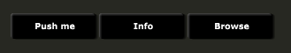
Button (File button)
filebutton bounds(x, y, width, height), channel("chan"), text("offCaption"), populate("filetype", "dir"), value(val), colour("colour"), fontcolour("colour"), identchannel("channel"), alpha(val), visible(val), mode("mode")A filebutton can be used to select files from disk. The filename selected, or created will be sent to Csound on the named channel as a string message. Filebuttons can also be used to select snapshot files for Cabbage to save parameter presets. See the populate identifier below.
Identifiers
bounds(x, y, width, height) integer values that set position and size on screen(in pixels)
text("name") "name" will be the text that appears on the top of the info button.
colour("colour") This sets the colour of the button. filebuttons only have a single state, therefore they don’t need a unique on and off colour. Any CSS or HTML colour string can be passed to this identifier. The colour identifier can also be passed an RBG, or RGBA value. All channel values must be between 0 and 255. For instance colour(0, 0, 255) will create a blue, while colour(0, 255, 0, 255) will create a green with an alpha channel set to full.
fontcolour("colour") Sets the colour of the text that appears with the slider. See above for details on valid colours.
identchannel("channel") Sets the channel which messages from Csound are sent to the widget on. When used with a chnset opcode users can override widget attributes. See IDENTIFIER_CHANNELS
alpha(val) A value between 0 and 1 will set the alpha blend value for the entire component. Can be useful if you need to fade widgets in and out.
visible(val) A value of 0 will cause the widget to become invisible. Widgets have their visibility set to 1 by default.
populate("filetype", "dir") Sets the type of file to search for, and the initial directory to look in. For example, to set the file type to wave files use ".wav" as the filetype string. If using the filebutton to record parameter snapshots, you must specify a filetype of ".snaps", and a mode type of snapshot. If no directory is specified, the file browser will open in the current working directory.
mode("mode") Set how the button will behave when pressed. Valid modes are:
* file, Default. Will let the browser to select a file
* directory, Will let the browser to select a folder/directory
* snapshot, Will stop the file browser from opening, and instead will write a preset, or snapshot, file to disk with a default file name. The default filename will be the csd filename, with an underscore and number appended to it. For instance, if the filename is CabbageStew.csd, the preset files will be named CabbageStew_0.csd, CabbageStew_1.csd, CabbageStew_2.csd, etc. The snapshot mode provides is a very quick way of saving presets to disk. For more on presets see the Combobox widget reference.
Example
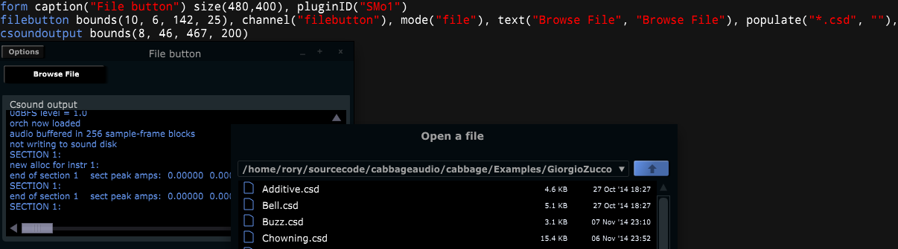
Button (Information button)
infobutton bounds(x, y, width, height), text("name"), colour("colour"), fontcolour("colour") file("file name"), identchannel("chan"), alpha(val), visible(val)Identifiers
Infobuttons can be used to open html files in the system’s default web browser. When clicked, the file passed to the file() identifier will be opened, if it is a valid file. This widget can be useful for providing help files or any other additional information about your instruments.
bounds(x, y, width, height) integer values that set position and size on screen(in pixels)
text("name") "name" will be the text that appears on the top of the info button.
colour("colour") This sets the colour of the button. infobuttons only have a single state, therefore they don’t need a unique on and off colour. Any CSS or HTML colour string can be passed to this identifier. The colour identifier can also be passed an RBG, or RGBA value. All channel values must be between 0 and 255. For instance colour(0, 0, 255) will create a blue, while colour(0, 255, 0, 255) will create a green with an alpha channel set to full.
fontcolour("colour") Sets the colour of the text that appears with the slider. See above for details on valid colours. .
file("file name") Sets the file that will be opened when a user clicks on the button. For convenience, the file passed to the file() identifier should reside in the same directory as the current .csd file. If not you will need to provide a full path to the requested file.
identchannel("channel") Sets the channel which messages from Csound are sent to the widget on. When used with a chnset opcode users can override widget attributes. See IDENTIFIER_CHANNELS
alpha(val) A value between 0 and 1 will set the alpha blend value for the entire component. Can be useful if you need to fade widgets in and out.
visible(val) A value of 0 will cause the widget to become invisible. Widgets have their visibility set to 1 by default.
Example
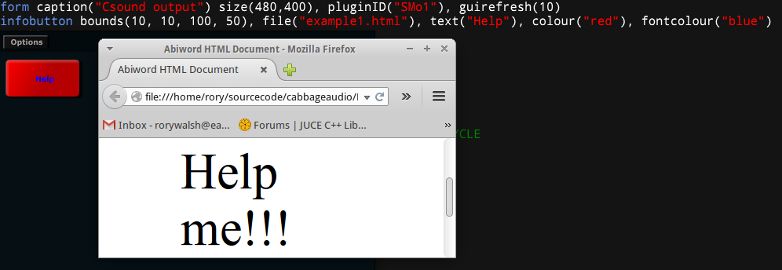
Check Box
checkbox bounds(x, y, width, height), channel("chan"), text("name"), value(val), caption("Caption"), colour:0("colour"), colour:1("colour"), shape("shape"), fontcolour("colour"), identchannel("channel"), alpha(val), visible(val)Checkbox creates a checkbox which functions like a button, but the associated caption will not change when the user checks it. As with all widgets capable of sending data to Csound, the channel string is the channel on which the widget will communicate with Csound.
Identifiers
bounds(x, y, width, height) integer values that set position and size on screen(in pixels).
channel("chan") "chan" is the name of the channel that Cabbage will communicate with Csound on. The current value of this widget can be retrieved in Csound using a chnget opcode, or can be set using a chnset opcode.
caption("caption") This identifier lets you place your control within a groupbox. "caption" is the text that will appear on groupbox. This identifier is useful for naming and containing controls.
text("name") "name" will be the text that appears beside the checkbox.
value(val) val sets the initial state of the control
colour:0("colour") This sets the colour of the LED when it is in its OFF state. Any CSS or HTML colour string can be passed to this identifier. The colour identifier can also be passed an RBG, or RGBA value. All channel values must be between 0 and 255. For instance colour(0, 0, 255) will create a blue, while colour(0, 255, 0, 255) will create a green with an alpha channel set to full.
colour:1("colour") Sets the colour of the widget when it is in its ON state. See above for details on valid colours.
|
|
You can create an invisible checkbox by setting the colour to something with an alpha value of 0. Images can then be placed under the checkbox to create an image button. See the PVSampler instrument as an example of this. |
fontcolour("colour") Sets the colour of the font to appear on the groupbox. See above for details on valid colours.
shape("shape") Sets the shape of the LED. Default is "square" but users can use "circle" also.
identchannel("channel") Sets the channel which messages from Csound are sent to the widget on. When used with a chnset opcode users can override widget attributes.
alpha(val) A value between 0 and 1 will set the alpha blend value for the entire component. Can be useful if you need to fade widgets in and out.
visible(val) A value of 0 will cause the widget to become invisible. Widgets have their visibility set to 1 by default.
|
|
colour:1() can be set using colour(). However, it’s recommended that you use the numerated colour identifiers in order to make your code more readable. |
Example
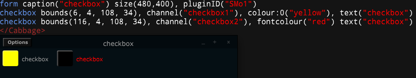
Combo Box
combobox bounds(x, y, width, height), channel("chan"), value(val), items("item1", "item2", ...), populate("filetype", "dir"), channeltype("type"), colour("colour"), fontcolour("colour"), identchannel("channel"), alpha(val), visible(val), caption("caption")Identifiers
Combobox creates a drop-down list of items which users can choose from. Once the user selects an item, the index of their selection will be sent to Csound on a channel named by the channel string. The default value is 0.
bounds(x, y, width, height) integer values that set position and size on screen(in pixels).
channel("chan") "chan" is the name of the channel that Cabbage will communicate with Csound on. The current value of this widget can be retrieved in Csound using a chnget opcode, or can be set using a chnset opcode.
items("item1", "item2", ...) list of items that will populate the combo box. Each item has a corresponding index value. The first item when selected will send a 1, the second item a 2, the third a 3 etc. If this identifier is left out default values of "Item 1", "Item 2", "Item 3", "Item 4" and "Item 5" will be used.
value(val) val sets the initial state of the widget
populate("filetype", "dir") This will auto-populate the combobox with a set of files from a given directory. Users should specify the file type and the directory to look in. If using a combobox to recall previously recorded preset snapshots you must specify a filetype of "*.snaps". When using the populate() identifier you do not need to use the items() identifier. If no directory is specified, Cabbage will look in the current working directory.
caption("caption") This identifier lets you place your widget within a groupbox. "caption" is the text that will appear on groupbox. This identifier is useful for naming and containing widgets.
channeltype("type") Specifies the type of channel. Default is "float". If you wish to send the text contained in the combobox, for examples the names of a set of audio samples, set type to "string". If type is not set to string the index of the selected item will be sent to Csound on the named channel.
colour("colour") This sets the background colour of the combobox. Any CSS or HTML colour string can be passed to this identifier. The colour identifier can also be passed an RBG, or RGBA value. All channel values must be between 0 and 255. For instance colour(0, 0, 255) will create a blue, while colour(0, 255, 0, 255) will create a green with an alpha channel set to full.
fontcolour("colour") Sets the colour of the text and arrow that appear on the combobox. See above for details on valid colours.
identchannel("channel") Sets the channel which messages from Csound are sent to the widget on. When used with a chnset opcode users can override widget attributes.
alpha(val) A value between 0 and 1 will set the alpha blend value for the entire component. Can be useful if you need to fade widgets in and out.
visible(val) A value of 0 will cause the widget to become invisible. Widgets have their visibility set to 1 by default.
Example
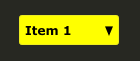
Csound Output Widget
csoundoutput bounds(x, y, width, height), text("name"), colour("colour"), fontcolour("colour"), identchannel("channel"), visible(val), alpha(val)csoundoutput will display Csound output messages within your instrument`s GUI. This widget can be very useful when working in plugin mode and can be invaluable when it comes to de-slugging Cabbage instruments.
Identifiers
bounds(x, y, width, height) integer values that set position and size on screen(in pixels)
text("name") "name" will be the text that appears on the top of the check box.
colour("colour") This sets the colour of the background of the output console. Any CSS or HTML colour string can be passed to this identifier. The colour identifier can also be passed an RBG, or RGBA value. All channel values must be between 0 and 255. For instance colour(0, 0, 255) will create a blue, while colour(0, 255, 0, 255) will create a green with an alpha channel set to full.
fontcolour("colour") Sets the colour of the text. See above for details on valid colours.
identchannel("channel") Sets the channel which messages from Csound are sent to the widget on. When used with a chnset opcode users can override widget attributes. See IDENTIFIER_CHANNELS
alpha(val) A value between 0 and 1 will set the alpha blend value for the entire component. Can be useful if you need to fade widgets in and out.
visible(val) A value of 0 will cause the widget to become invisible. Widgets have their visibility set to 1 by default.
Example
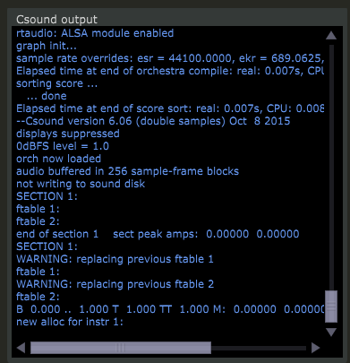
GenTable
gentable bounds(x, y, width, height), tableNumber(1, 2, ...), tablecolour("colour1", "colour2", ...), amprange(min, max, tablenumber, y-quantise), tablegridcolour("colour"), tablebackgroundcolour("colour"), samplerange(min, max), zoom(val), outlinethickness(val), identchannel("channel"), alpha(val), visible(val), scrubberposition(val)gentable displays the contents of a function table, multiple tables, or files. Function tables that use a negative GEN05, GEN07 or GEN02 can be edited by clicking and dragging on the table. Only tables of size less or equal to 16384 points can be manually edited. If you wish to save any tables that you create you can use one of Csound’s built-in table saving opcode "ftsave". If you need only display the contents of a static sound file from disk, use soundfiler as it will be fast and use less CPU. If on the other hand you wish to create some user editable envelopes, or display FFT or live waveform data use table.
Identifiers
bounds(x, y, width, height) Integer values that set position and size on screen(in pixels)
amprange(min, max, tablenumber, quantise) Sets the amplitude range(Y-axis) for a particular table. Min and Max are the minimum and maximum values. Quantise will set the resolution of the Y axis for editing. For example, if quantise is set to 1, all points added to the table will be quantised to integer values. If quantise matches the dynamic range of the table, the table will be drawn as a grid of on/off switches. If only one amprange() identifier is used, a table number of -1 can be set so that each table displayed will share the same amp range.
|
|
amprange() is one of the few identifiers in Cabbage that can be used more than once in a line of Cabbage code. |
tablenumber(1, 2, ..) Sets the table/tables to be displayed. If multiple tables are specified the tables will be superimposed on top of each other. If multiple tables are specified with a colon between then the tables will be stacked on top of each other along the Y-axis, e.g., tablenumber(1:2:3:4).
tablebackgroundcolour("colour") This sets the global background colour. Any CSS or HTML colour string can be passed to this identifier. The colour identifier can also be passed an RBG, or RGBA value. All channel values must be between 0 and 255. For instance colour(0, 0, 255) will create a blue, while colour(0, 255, 0, 255) will create a green with an alpha channel set to full.
|
|
The default value for the background colour is rgb(10, 10, 10). If you are superimposing tables on top of each other only one can be seen at any time when using the default background colour. If you wish to show all tables at the same time use a colour with an alpha value. Tables with no alpha channels are drawn faster and use less CPU. |
tablegridcolour("colour") Sets the colour of the grid to be drawn. If you don’t want a grid to be drawn set this colour to transparent, i.e., 0,0,0,0. See above for details on valid colours.
tablecolour("colour1", "colour2", ...) Sets the colour of the table. If you leave this identifier out default colours will be chosen for the tables. If the table size is equal or less than two, the colours passed to tablecolour() will form a gradient fill or three colours.
|
|
The tablecolour() identifier will not work with RGBA/RGB values. You must instead use a valid CSS colour name. |
file("filename") Sets a file for the table to display. Unlike the tablenumber() identifier, which depends on the existence of a valid function table, file() will simply display a file from disk. This can be useful if you are using one of Csound’s file reading opcodes. File are always shown as table 0, and will always be the first table created. Therefore it will always take the first colour passed to the tablecolour list.
|
|
The background grid is disabled when working with a table that use the file() identifier. |
scrubberposition(val) Sets the scrubber position in samples, from the start of the file. Only valid when displaying a sound file or a GEN01 table. If you wish to display a scrubber with other table types use an image and an identchannel. See the GridSequencer instrument as an example.
zoom(val) Sets the initial zoom value. Passing a -1 to zoom will cause the zoom buttons to disappear.
outlinethickness(val) Sets the thickness of the waveform’s envelope in pixels. If you are drawing spectrograms setting this to 0 will speed up the process and reduce CPU drain.
fill(val) This will turn on or off the waveform fill. By default this is set to 1, therefore all table will fill in their envelopes.
identchannel("channel") Sets the channel which messages from Csound are sent to the widget on. When used with a chnset opcode users can override widget attributes.
alpha(val) A value between 0 and 1 will set the alpha blend value for the entire component. Can be useful if you need to fade widgets in and out.
visible(val) A value of 0 will cause the widget to become invisible. Widgets have their visibility set to 1 by default
|
|
If you need to redraw tables quickly, make sure they don’t use negative GEN routines as it will seriously slow down redrawing. |
Example

Form
form caption("title"), size(Width, Height), pluginid("plug"), colour("colour"), guirefresh(val)Form creates the main application window. pluginid() is the only required identifier. The default values for size are 600x300.
Identifiers
caption The string passed to caption will be the string that appears on the main application window.
size(Width, Height) integer values denoted the width and height of the form.
pluginid("plug") this unique string must be four characters long. It is the ID given to your plugin when loaded by plugin hosts.
guirefresh(val) Sets the rate at which Cabbage will update its GUI widgets when controlled by Csound. The value passed represents the number of k-rate cycles to be skipped before the next update. The larger this is the slower the GUI updates will take place, but the less CPU intensive the instrument will be. val should be an integer greater than 1 and is set to 50 by default.
colour("colour") This sets the background colour of the instrument. Any CSS or HTML colour string can be passed to this identifier. The colour identifier can also be passed an RBG value. All channel values must be between 0 and 255. For instance colour(0, 0, 255) will create blue. RGBA values are not permitted when setting colours for your main form. If an RGBA value is set, Cabbage will convert it to RGB. The default colour for form is rgb(5, 15, 20).
|
|
Every plugin must have a unique plugin ID. If you experience problems loading two different plugins, it could be because they use the same plugin ID. The plugin ID seems to be more relevant when working with OSX than on Linux or Windows. |
Example
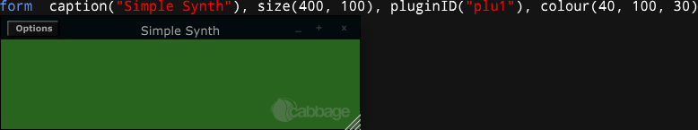
Group Box
groupbox bounds(x, y, width, height), text("Caption"), colour("colour"), fontcolour("colour"), line(value), plant("name"), popup(val), child(val), visible(val), alpha(val), show(val), identchannel("channel")Groupbox creates a container for other GUI widgets. They do not communicate with Csound but can be useful for organising widgets into panels.
Identifiers
bounds(x, y, width, height) integer values that set position and size on screen(in pixels)
text("caption") "caption" will be the string to appear on the group box
colour("colour") This sets the colour of the groupbox. Any CSS or HTML colour string can be passed to this identifier. The colour identifier can also be passed an RBG, or RGBA value. All channel values must be between 0 and 255. For instance colour(0, 0, 255) will create a blue, while colour(0, 255, 0, 255) will create a green with an alpha channel set to full.
fontcolour("colour") Sets the colour of the font to appear on the groupbox. See above for details on valid colours. .
line(value) Turns off the line that appears on a groupbox.
plant("name") Sets the name of the plant. No two plants can have the same name. See link#_plants[Plants]
alpha(val) A value between 0 and 1 will set the alpha blend value for the entire component. Can be useful if you need to fade widgets in and out.
visible(val) A value of 0 will cause the widget to become invisible. Widgets have their visibility set to 1 by default.
popup(val) If the groupbox is a plant, a value of 1 will cause the groupbox to open in a new window when show(1) is called. popup() should always be used in conjunction with the show() identifier. See WORKING_WITH_PLANTS
show(val) A value of 1 will cause the popup plant to show. A value of 0 will close the popup plant. See WORKING_WITH_PLANTS
child(0) A value of 1 will cause the popup plant to be a child of the main form. By default, popup plants are not children of the main form and can therefore appear anywhere on screen. If the popup plant is a child of the main form, it can only appear within the bounds of the main form.
identchannel("channel") Sets the channel which messages from Csound are sent to the widget on. When used with a chnset opcode users can override widget attributes. See IDENTIFIER_CHANNELS
Example
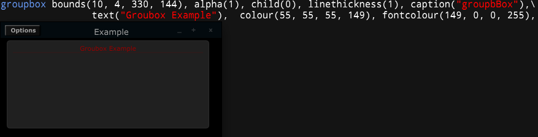
Image
image bounds(x, y, width, height), colour("colour"), file("file name"), shape("type"), outline("colour"), line(thickness), `plant("name"), identchannel("channel"), visible(val), alpha(val)Image creates a static shape or graphic. It can be used to show pictures or it can be used to draw simple shapes. If you wish to display a picture you must pass the file name to the file() identifier. For convenience, the file passed to file() should be in the same directory as your Cabbage instrument.
Identifiers
bounds(x, y, width, height) integer values that set position and size on screen(in pixels).
file("filename") "filename" is the name of the image file to be displayed on the widget. If a full file path is not given, file() will search in the current directory, i.e., the directory that contains the csd file that is open. It is best to keep all files in the same directory as your csd file, but if you wish to keep them in a sperate folder you can pass a full path to the file() identifier.
shape("type"); "shape" must be either round(with rounded corners, default), sharp(with sharp corners), or ellipse(an elliptical shape)
colour("colour") This sets the colour of the image if no file name is given with the file identifier. Any CSS or HTML colour string can be passed to this identifier. The colour identifier can also be passed an RBG, or RGBA value. All channel values must be between 0 and 255. For instance colour(0, 0, 255) will create a blue, while colour(0, 255, 0, 255) will create a green with an alpha channel set to full.
outlinecolour("colour") This sets the outline colour of the image/shape. See above for details on valid colours. .
linethickness(thickness) This sets the line thickness in pixels.
plant("name") Sets the name of the plant. No two plants can have the same name. See PLANTS
identchannel("channel") Sets the channel which messages from Csound are sent to the widget on. When used with a chnset opcode users can override widget attributes.
alpha(val) A value between 0 and 1 will set the alpha blend value for the entire component. Can be useful if you need to fade widgets in and out.
visible(val) A value of 0 will cause the widget to become invisible. Widgets have their visibility set to 1 by default.
|
|
Try to avoid full path names at all costs. They will work fine on a local machine, but will not be valid on another machine. |
Example
Keyboard
keyboard bounds(x, y, width, height), value(note), identchannel("channel"), visible(val)Keyboard will display a keyboard that will send MIDI information to your Csound instrument. This component can be used together with a hardware controller. Pressing keys on the actual MIDI keyboard will cause the on-screen keys to react up.
Identifiers
bounds(x, y, width, height) integer values that set position and size on screen(in pixels)
value(note) sets the note on the leftmost side of the keyboard when it appears on-screen. Middle C, 60, is the default.
visible(val) A value of 0 will cause the widget to become invisible. Widgets have their visibility set to 1 by default.
identchannel("channel") Sets the channel which messages from Csound are sent to the widget on. When used with a chnset opcode users can override widget attributes. See IDENTIFIER_CHANNELS
|
|
The keyboard can be played at different velocities depending on where you click on the key with your mouse. Clicking at the top of the key will cause a quieter velocity while clicking on the bottom will cause the note to sound with full velocity. If you wish to play the keyboard like a nutjob in standalone mode, make sure to pass -m0d to the CsOptions(disable console messages). The keyboard widget is only provided as a quick and easy means of testing plugins in Cabbage. Treating it as anything more than that could result in severe disappointment! |
Example
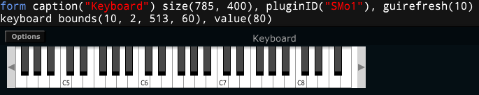
Label
label bounds(x, y, width, height), text("text"), colour("colour"), fontcolour("colour"), align("position"), identchannel("channel"), alpha(val), visible(val)Labels can be used for placing text on-screen.
Identifiers
bounds(x, y, width, height) integer values that set position and size on screen(in pixels).
text("text") "text" will be the string to appear on the label
align("position") Aligns the label’s text. "position" should be left, right or centre.
colour("colour") This sets the background colour of the label. Any CSS or HTML colour string can be passed to this identifier. The colour identifier can also be passed an RBG, or RGBA value. All channel values must be between 0 and 255. For instance colour(0, 0, 255) will create a blue, while colour(0, 255, 0, 255) will create a green with an alpha channel set to full.
fontcolour("colour") This sets the colour of the image if no file name is given with the file identifier. Any CSS or HTML colour string can be passed to this identifier. The colour identifier can also be passed an RBG, or RGBA value. All channel values must be between 0 and 255. For instance colour(0, 0, 255) will create a blue, while colour(0, 255, 0, 255) will create a green with an alpha channel set to full.
identchannel("channel") Sets the channel which messages from Csound are sent to the widget on. When used with a chnset opcode users can override widget attributes.
alpha(val) A value between 0 and 1 will set the alpha blend value for the entire component. Can be useful if you need to fade widgets in and out.
visible(val) A value of 0 will cause the widget to become invisible. Widgets have their visibility set to 1 by default.
Example
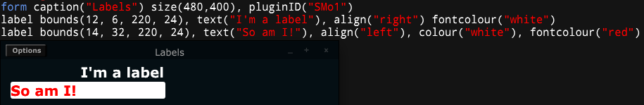
Sliders
hslider bounds(x, y, width, height), channel("chan"), text("name"), textbox(val), range(min, max, value, skew, incr), min(val), max(val),
textcolour("colour"), fontcolour("colour"), trackercolour("colour"), outlinecolour("colour"), identchannel("channel"), alpha(val), visible(val), caption("caption")Slider can be used to create an on-screen slider. Data can be sent to Csound on the channel specified through the chan string. Presented above is the syntax for a horizontal slider, i.e., hslider. In order to change it to another slider type simple substitute hslider with the appropriate slider type as outlined below.
Identifiers
bounds(x, y, width, height) integer values that set position and size on screen(in pixels).
channel("chan") "chan" is the name of the channel that Cabbage will communicate with Csound on. The current value of this widget can be retrieved in Csound using a chnget opcode, or can be set using a chnset opcode. If you are using a hslider2 or vslider2 widget you will need to pass two channel names, e.g., channel("sliderMin", "slidermax"), as the slider will be sending data over two channels.
range(min, max, value, skew, incr) the first 2 parameters are required. The rest are optional. The first two parameters let you set the minimum value and the maximum value. The next parameter determines the initial value of the slider. The next allows you to adjust the skew factor. Tweaking the skew factor can cause the slider to output values in a non linear fashion. A skew of 0.5 will cause the slider to output values in an exponential fashion. A skew of 1 is the default value, which causes the slider to behave is a typical linear form.
min(val) If using a double or triple pointer slider (hslider2, hslider3, vslider2, vslider3), min() will set the default minimum position of the minimum thumb controller. The absolute minimum is set using the range identifier. See above.
max(val) If using a double or triple pointer slider (hslider2, hslider3, vslider2, vslider3), max() will set the default maximum position of the maximum thumb controller. The absolute maximum is set using the range identifier. See above.
text("name") The string passed in for "name" will appear on a label beside the slider. This is useful for naming sliders.
textbox(on/off) textbox takes a 0 or a 1. 1 will cause a text box to appear with the sliders values. Leaving this out will result in the numbers appearing automatically when you hover over the sliders with your mouse.
colour("colour") This sets the slider. Any CSS or HTML colour string can be passed to this identifier. The colour identifier can also be passed an RBG, or RGBA value. All channel values must be between 0 and 255. For instance colour(0, 0, 255) will create a blue, while colour(0, 255, 0, 255) will create a green with an alpha channel set to full.
textcolour("colour") This set the colour of the text passed to text(). If you wish to change the colour of the numbers being displayed use fontcolour(). See below. See above for details on valid colours.
fontcolour("colour") Sets the colour of the text used to display the slider’s value when textbox is enable. See above for details on valid colours. .
trackercolour("colour") Sets the colour of the slider`s tracker. This is the line that follows the slider when you move it. See above for details on valid colours.
outlinecolour("colour") Sets the colour of a rotary slider`s tracker outline. This is the line that is drawn around the rslider’s tracker. If you don’t wish to display the tracker outline set the colour to something with an alpha value of 0. See above for details on valid colours.
identchannel("channel") Sets the channel which messages from Csound are sent to the widget on. When used with a chnset opcode users can override widget attributes.
alpha(val) A value between 0 and 1 will set the alpha blend value for the entire component. Can be useful if you need to fade widgets in and out.
visible(val) A value of 0 will cause the widget to become invisible. Widgets have their visibility set to 1 by default.
caption("caption") This identifier will place the widget within a groupbox. "caption" is the text that will appear on group box. This identifier is included for legacy purposes only. It is recommended that you use use your own groupbox component as it will give you far more control over how everything appears on your instrument.
- Slider types
-
-
rslider, a standard rotary or knob slider
-
hslider, a standard horizontal slider
-
vslider, a standard vertical slider
-
hslider2, two value horizontal range slider
-
vslider2, two value vertical range slider
-
hslider3, horizontal slider with adjustable min and max limits
-
vslider3, vertical slider with adjustable min and max limits.
-
|
|
Make sure to use two unique channel names when using hslider2 and vslider2, otherwise min and max will be set to the same value. |
Example
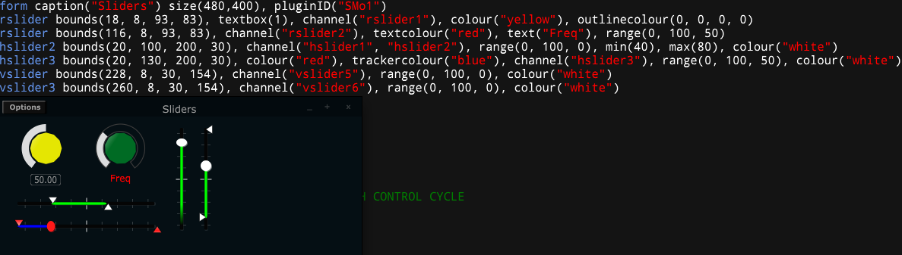
Soundfiler
soundfiler bounds(x, y, width, height), channel("start", "end"), colour("colour1"), zoom(val), tablenumber(val), file("filename"), scrubberpos(val), identchannel("channel"), alpha(val), visible(val)soundfiler will display the contents of a sound file, or a function table containing a sound file (GEN01 tables). This is a fast waveform viewer that allows users to select regions of the waveform. Unlike the table widget, soundfiler can only display one waveform at a time.
Identifiers
bounds(x, y, width, height) Integer values that set position and size on screen(in pixels)
tablenumber(val) Sets the table/tables to be displayed. If multiple tables are specified the tables will be superimposed on top of each other. If multiple tables are specified with a colon between then the tables will be stacked on top of each other along the Y-axis, e.g., tablenumber(1:2:3:4).
channel("start", "end") The soundfiler widget takes two channel parameters which relate to the currently selected region. The first channel will provide the starting position, in samples, of the selected region. The second channel will be the end position, in samples.
scrubberpos(val) Sets the scrubber position where val is an integer value in samples. If you wish to update the scrubberposition in real time use an identchannel identifier.
colour("colour") This sets the global background colour. Any CSS or HTML colour string can be passed to this identifier. The colour identifier can also be passed an RBG, or RGBA value. All channel values must be between 0 and 255. For instance colour(0, 0, 255) will create a blue, while colour(0, 255, 0, 255) will create a green with an alpha channel set to full.
file("filename") Sets a file for the table to display. Unlike the tablenumber() identifier, which depends on the existence of a valid function table, file() will simply display a file from disk. This can be useful if you are using one of Csound’s file reading opcodes. If a full file path is not given, file() will search in the current directory, i.e., the directory that contains the csd file that is open. It is best to keep all files in the same directory as your csd file, but if you wish to keep them in a sperate folder you can pass a full path to the file() identifier.
zoom(val) Sets the initial zoom value. Passing a -1 to zoom will cause the zoom buttons to disappear.
identchannel("channel") Sets the channel which messages from Csound are sent to the widget on. When used with a chnset opcode users can override widget attributes.
alpha(val) A value between 0 and 1 will set the alpha blend value for the entire component. Can be useful if you need to fade widgets in and out.
visible(val) A value of 0 will cause the widget to become invisible. Widgets have their visibility set to 1 by default
Example
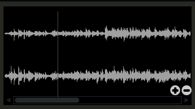
Table (deprecated)
Please use gentable, or soundfiler instead. If you wish to update instrument that used the table widget, you can simply replace table with gentable. The table widget will remain in the code base so that older instruments which use it will continue to work.
Text Box
textbox bounds(x, y, width, height), file("filename"), colour("colour"), fontcolour("colour"), wrap(val), alpha(val), visible(val)Textbox will display the contents of a text file. This can be useful for placing instructions and information directly on to an instrument.
Identifiers
bounds(x, y, width, height) integer values that set position and size on screen(in pixels)
colour("colour") This sets the colour of the image if a file name is not passed to file. Any CSS or HTML colour string can be passed to this identifier. The colour identifier can also be passed an RBG, or RGBA value. All channel values must be between 0 and 255. For instance colour(0, 0, 255) will create a blue, while colour(0, 255, 0, 255) will create a green with an alpha channel set to full.
fontcolour("colour") Sets the colour of the text that appears with the slider. See above for details on valid colours. .
file("file name") Set the file that will be opened. This file must reside in the same directory as the current .csd file. Do not pass a full path. Cabbage only needs the name and extension, for example file("help.txt").
identchannel("channel") Sets the channel which messages from Csound are sent to the widget on. When used with a chnset opcode users can override widget attributes.
wrap(val) Turns text wrapping on of off. This is set to 0 by default, so no wrapping of text is done.
alpha(val) A value between 0 and 1 will set the alpha blend value for the entire component. Can be useful if you need to fade widgets in and out.
visible(val) A value of 0 will cause the widget to become invisible. Widgets have their visibility set to 1 by default.
Example
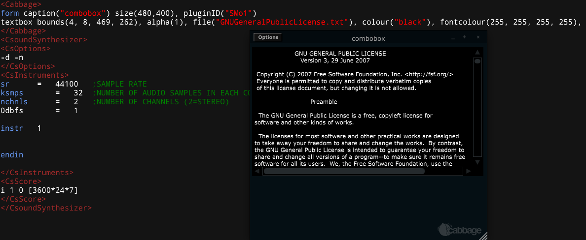
Text Editor
texteditor bounds(x, y, width, height), channel("channel"), text("text"), colour("colour"), fontcolour("colour"), alpha(val), visible(val)Texteditor can be used to send strings to Csound. Hitting return will send the string to Csound on a named string channel. Pressing the up and down buttons when the texteditor is in focus will toggle through the previous strings that have been sent.+
Identifiers
bounds(x, y, width, height) integer values that set position and size on screen(in pixels)
channel("chan") "chan" is the name of the channel that Cabbage will communicate with Csound on. The current value of this widget can be retrieved in Csound using a chnget opcode, or can be set using a chnset opcode.
colour("colour") This sets the colour of the image if a file name is not passed to file. Any CSS or HTML colour string can be passed to this identifier. The colour identifier can also be passed an RBG, or RGBA value. All channel values must be between 0 and 255. For instance colour(0, 0, 255) will create a blue, while colour(0, 255, 0, 255) will create a green with an alpha channel set to full.
fontcolour("colour") Sets the colour of the text that appears with the slider. See above for details on valid colours.
identchannel("channel") Sets the channel which messages from Csound are sent to the widget on. When used with a chnset opcode users can override widget attributes.
alpha(val) A value between 0 and 1 will set the alpha blend value for the entire component. Can be useful if you need to fade widgets in and out.
visible(val) A value of 0 will cause the widget to become invisible. Widgets have their visibility set to 1 by default.
Example
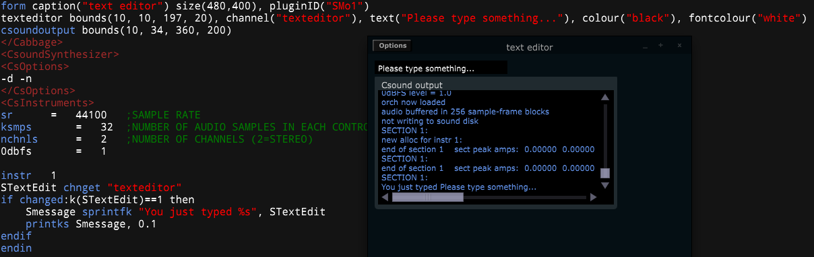
XY Pad
xypad bounds(x, y, width, height), channel("chan1", "chan2"), rangex(min, max, val), rangey(min, max, val), text("name"), identchannel("channel"), colour("colour"), fontcolour("colour"), alpha(val), visible(val)xypad is an x/y controller that sends data to Csound on two named channels. The first channel transmits the current position of the ball on the X axis, while the second transmits the position of the ball on the Y axis. The XY pad can function in two unique modes of automation, free and path based. The two modes can be toggled by clicking on the corresponding icon on the bottom left of the xypad control. With either mode selected you can right-click the xypad and create a trajectory or path for the circle’s movement. Release the mouse and the circle will start moving. Once the ball is in full flight you can control the speed of the ball using the XY pad slider that will appear once you hover over it with the mouse. To stop the ball simple left click anywhere on the xy pad canvas with the left mouse button.
Identifiers
bounds(x, y, width, height) integer values that set position and size on screen(in pixels)
channel("chan1", "chan2") "chan1" is the name of the X-axis channel in which to communicate with Csound, and "chan2" is the Y-axis channel in which to communicate with Csound.
text("name") "name" will be the text that appears on the top right hand side of the XYpad surface.
rangex(min, max, value) sets the range of the X axis. The first 2 parameters are required. The third is optional. The first two parameters let you set the minimum value and the maximum value. The next parameter determines the initial value.
rangey(min, max, value) sets the range of the Y axis. The first 2 parameters are required. The third is optional. The first two parameters let you set the minimum value and the maximum value. The next parameter determines the initial value.
colour("colour") This sets the colour of the xypad circle and corresponding number boxes. Any CSS or HTML colour string can be passed to this identifier. The colour identifier can also be passed an RBG, or RGBA value. All channel values must be between 0 and 255. For instance colour(0, 0, 255) will create a blue, while colour(0, 255, 0, 255) will create a green with an alpha channel set to full.
fontcolour("colour") This sets the colour of the xypad text label and mode selector labels. See above for details on valid colours.
identchannel("channel") Sets the channel which messages from Csound are sent to the widget on. When used with a chnset opcode users can override widget attributes.
alpha(val) A value between 0 and 1 will set the alpha blend value for the entire component. Can be useful if you need to fade widgets in and out.
visible(val) A value of 0 will cause the widget to become invisible. Widgets have their visibility set to 1 by default
|
|
XY pads range identifiers do not permit the setting of skew factors, or increments. If you wish to set a custom skew factor, or increment value, you will need to do so using Csound code. |
Example
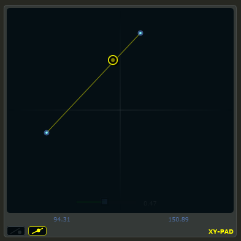
Plants
Cabbage plants are GUI abstractions that contain one or more controls. These abstractions are used as anchors to the child widgets contained within. All widgets contained within a plant have top and left positions which are relative the the top left position of the parent. Resizing the plant will in turn resize all the widgets contained within. While all widgets can be children of a plant, only group boxes and images can be used as plants themselves. Adding a plant identifier to an image or group box definition will cause them to act as containers. The plant() identifier takes a string that denotes the name of the plant. Plant names must be unique within an instrument or plants will end up being placed on top of each other. When using an image or a group box as a plant, you must enclose the code from the widgets that follow in curly brackets to indicate which controls belong to the plant. In the code below a group box control is set up as a plant, and three child sliders are placed within it.

The values passed to bounds() for the child controls can be either fractions proportional to the plants overall size and position, or absolute pixel values. For example, bounds(0, .5, .5, 1) will cause a child widget to appear half way across the plant, and half way down. While bounds(10, 10, 200, 200) will cause the child control to be 10 pixels from the top/left, and have a size of 200x200 pixels.
The major advantage to using plant abstractions is that you can easily move and resize them without needing to modify the dimensions of the child widgets contained within. You can also save your plants and recall them later from a plant repository. Plants are intended to be reused across instruments so users do not have to keep rebuilding GUIs from scratch. They can also be used to give your plugins a unique look and feel.
Reserved Channels
Cabbage reserves several channels which are used to send information to Csound from either the host application, or from Cabbage itself. To retrieve info from any of these channels just use a chnget opcode.
CSD_PATH This string channel will retrieve the full path to the current csd file.
HOST_BPM Retrieve the currents host bpm. This will be updated whenever the host BPM changes.
IS_PLAYING Pressing play on the host transport dialogue will cause this channel to send a 1. Hitting stop will send a 0.
IS_RECORDING As above only for monitoring the record status of a session.
TIME_IN_SECONDS Return the current time in seconds from the start of the track.
TIME_IN_SAMPLES Return the current time in samples from the start of the track.
TIME_SIG_DENOM The signature denominator, e.g. the 4 of a 3/4 time sig
TIME_SIG_NUM The signature numerator, e.g. the 3 of a 3/4 time sig
HOST_PPQ_POS Return the position of the start of the last bar, in pulses-per-quarter-note.
MOUSE_X Returns the X coordinate of the current mouse position.
MOUSE_Y Returns the Y coordinate of the current mouse position
MOUSE_DOWN_LEFT Returns the current state of the left most mouse button; 1 if pressed, and 0 if not.
MOUSE_DOWN_MIDDLE Returns the current state of the middle mouse button; 1 if pressed, and 0 if not.
MOUSE_DOWN_RIGHT Returns the current state of the right mouse button; 1 if pressed, and 0 if not.
The Cabbage Standalone Host

While any text editor can be used to code Cabbage instruments, it’s fair to say that most development and prototyping will be done with the main Cabbage host and source code editor. The following is a run down of the various options accessible from the Options menu.
Open Cabbage Instrument
Use this command to open a cabbage instrument(unified Csound file with a dedicated <Cabbage></Cabbage> section). You may open any .csd file you wish and add a Cabbage section yourself once it’s open. Note that if you try to open an existing non-Cabbage .csd file you will need to update its CsOptions section so that Csound doesn’t try to write audio to disk itself.
|
|
On OSX users can open .csd files contained within plugins. Just select a .vst file instead of a .csd file when opening. See the sections on exporting plugins for more information. |
New Cabbage…
This command will help you create a new Cabbage instrument/effect. Cabbage instruments are synthesisers capable of creating sounds from scratch while effects process incoming audio. Effects can access the incoming audio by using the inch or ins opcodes. All effects have stereo inputs and stereo outputs. Instruments can access the incoming MIDI data in a host of different ways but the easiest is to pipe the MIDI data directly to instrument p-fields using the MIDI inter-op command line flags. Examples can be found in the examples folder.
View Source Editor
This command will launch the integrated text editor. The text editor will always contain the text which corresponds to the instrument that is currently open. Each time a file is saved in the editor(Ctrl+S), Cabbage will automatically recompile the underlying Csound instrument and update any changes that have been made to the instruments GUI. The editor also features a Csound message console that can prove useful when debugging instruments.
Audio Settings
Clicking on the audio settings command will open the audio settings window. Here you can choose your audio/MIDI input/output devices. You can also select the sampling rate and audio buffer sizes. Small buffer sizes will reduce latency but might cause some clicks in the audio.
Toggle edit-mode
Enabling edit-mode allows users to interact with GUI widgets. When in edit-mode, right clicking on the instrument’s main area will display a context menu that will let you select a widget to insert on to your main form. When a widget is placed on screen the corresponding code will be inserted into your instrument’s code. Any changes you make to the widget’s size and position will automatically be updated in your code. Toggling edit-mode will also cause a property dialogue to appear. Any widget property can be set using this property dialogue window. In order to update your underlying source code with a newly edited property you must hit the Esc key on your keyboard. If you do not, your updated property will not be passed to the instrument’s source code and will therefore be discarded.
|
|
One should get into the habit of updating/saving their instruments when they make changes to its user interface. Instruments need to be recompiled for any changes to stick. |
Export/Export as…
This command will export your Cabbage instrument as a plugin. Clicking synth or effect will cause Cabbage to create a plugin file in the same directory as the .csd file you are currently using. When exporting as… Cabbage will prompt you to save your plugin in a set location, under a specific name. Once Cabbage has created the plugin it will make a copy of the current .csd file and locate it in the same folder as the plugin. This new .csd file will have the same name as the plugin and should ALWAYS be in the same directory as the plugin file.
|
|
You do not need to keep exporting instruments as plugins every time you modify them. You need only modify the associated .csd file. To simplify this task, Cabbage will automatically load the associated .csd file whenever you export as a plugin. On OSX Cabbage can open a plugin’s .csd file directly be selecting the plugin when prompted to select a file to open. |
Reload Instrument
This command will hard reset and rebuild the instrument from disk.
Batch Convert
Batch convert will let convert a selection of Cabbage .csd files, or an entire directory into plugins so you don’t have to manually open and export each one.
|
|
Currently this feature is only available on Windows. |
Preferences
The following preferences are available:
Always on Top
This command lets you toggle Always on top mode. By default it is turned on. This means your Cabbage instrument will always appear on top of any other applications that are currently open.
Set Cabbage plant directory
This will open a directory browser dialog so that you can specify a set directory for saving Cabbage plant text files to. The default location for these files will be the user’s home folder and should be left as is unless a unique location is absolutely required.
Set Csound manual directory
This will open a directory browser dialog so that you can specify the directory that contains Csound’s index.html file. Once this directory is set you can launch context help for any Csound opcode that the text cursor is currently placed on.
Disable plugin export info
Checking this will disable the plugin export information that pops up on screen each time you export a plugin.
Use external editor
If you wish to use a different source code editor with Cabbage than the one provided, you can check this option. Whenever you save changes to the .csd file that Cabbage currently has open, Cabbage will automatically update according to the changes made. Although it’s not as quick as the integrated editor, it does give you scope to use some feature rich source code editors with Cabbage.
Use native file dialogues
This option lets you set whether Cabbage will use its own File Chooser dialogues, or those provided by the operating system. Due to various issues with Linux file managers, Linux users may want to ensure that they use non-native dialogues. All file choosers that launch from within a Cabbage instrument will use non-native dialogues.